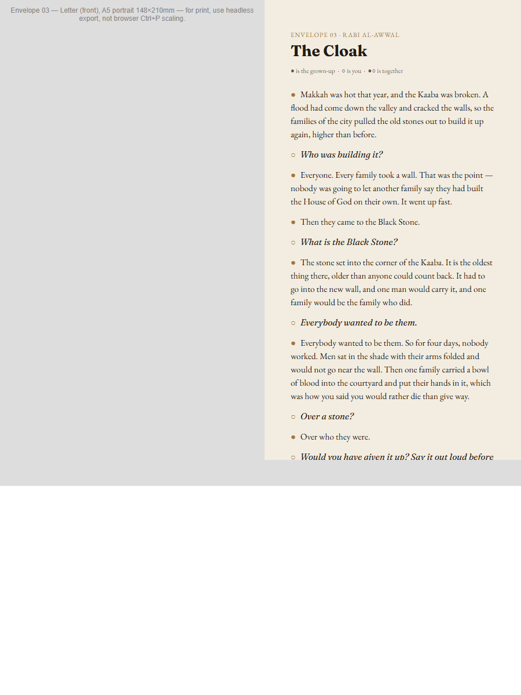
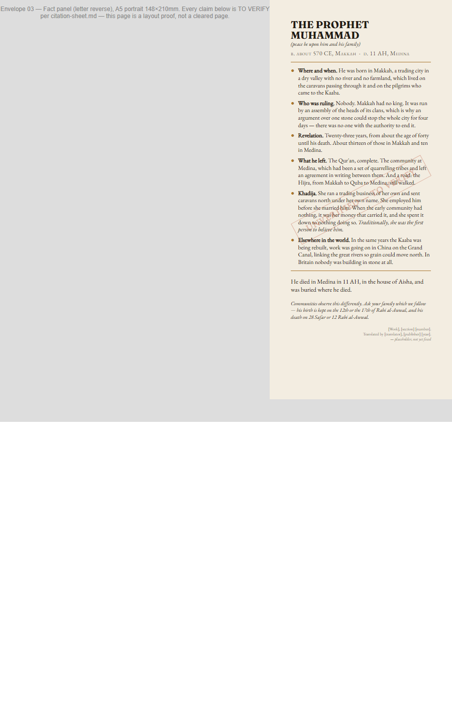
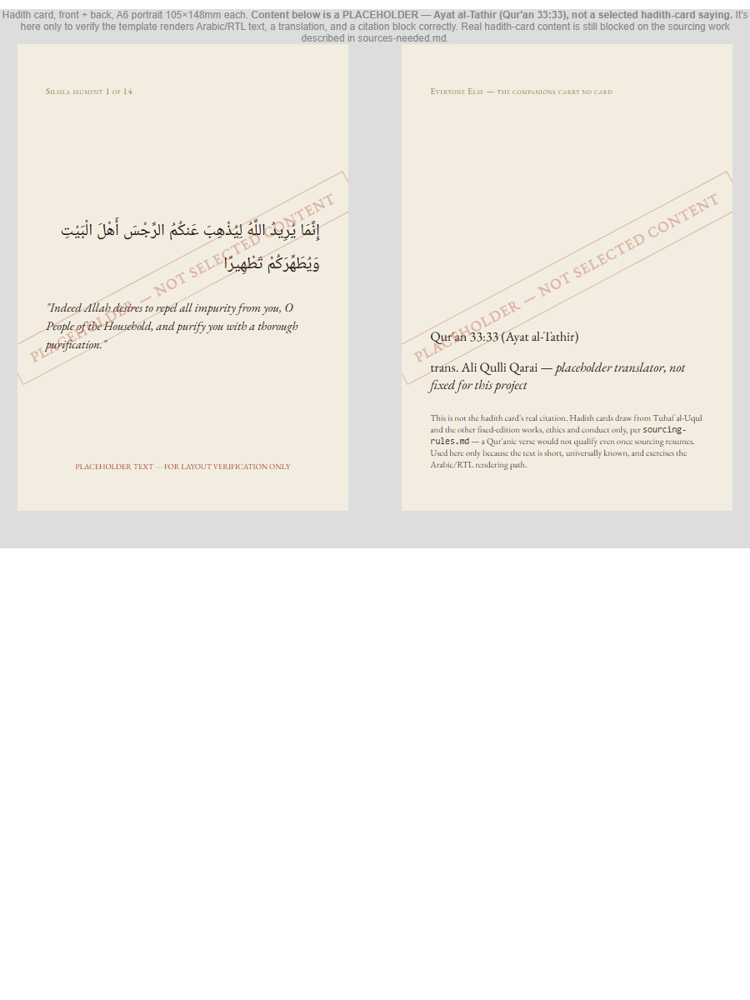
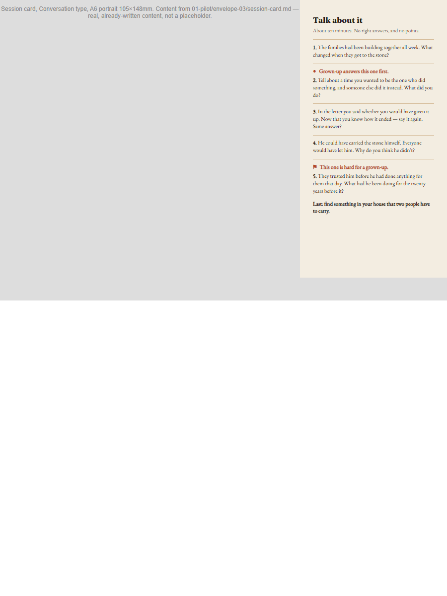
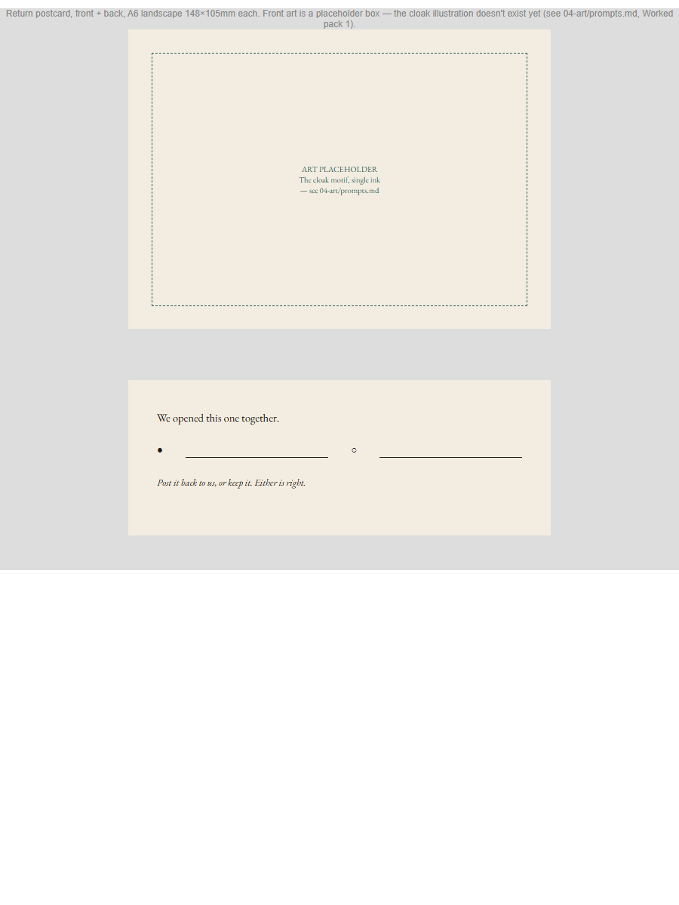
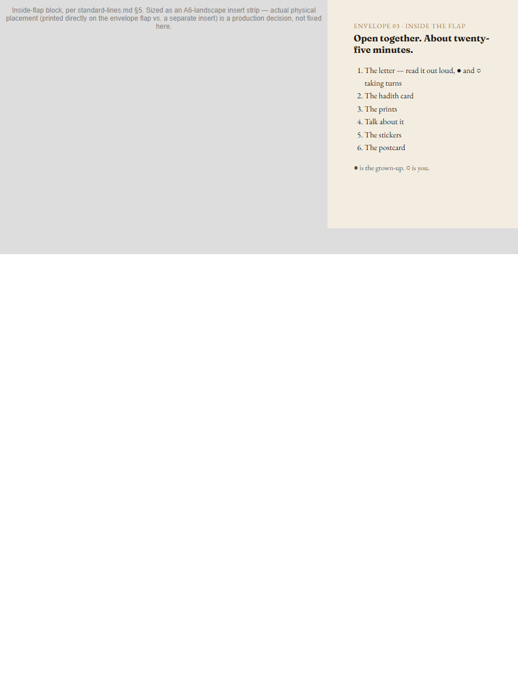

Noor Post
Fourteen sealed envelopes, one for each of the Fourteen Masoomeen, opened by a parent and a child together on the date it belongs to. About twenty-five minutes.
The Islamic year has twelve months and the Fourteen do not divide evenly into it, so two months carry two envelopes: Rajab and Sha'ban.
What arrives
An envelope arrives sealed. Inside is a letter written in two voices — one for the grown-up, one for the child — and the things that go with it. You read it out loud, taking turns. There is a question to talk about, something to keep, and a postcard to send back.
It is built to be re-read and kept, not skimmed once. The paper is warm ivory because it is going to be handled.
The first edition
The first edition is two parts, and together they are a closed set.
The Fourteen is the monthly box — fourteen envelopes, one for each of the Fourteen Masoomeen. Everyone Else is thirty-nine single envelopes, one per person, dateless, bought one at a time. A second edition is where anyone new would go.
The Fourteen
In calendar order, as they arrive.
Inside one envelope
Seven items in each envelope of the box.
- The letterA5, two voices, with the fact panel on its reverse
- The hadith cardA6, sized for a child's Qur'an
- The person printA5 portrait, for a wall
- The event printA5 landscape, punched for the ring
- The session cardA6 — a conversation, a case file, or a mourning session
- The sticker sheetA6, die-cut
- The return postcardA6, pre-addressed, to send back
The two mourning issues — Muharram and Safar — carry a pennant in place of the sticker sheet, and one extra line inside the flap saying there is no game in this one.
Three collections build across the year: fourteen hadith cards sized for a child's Qur'an, fourteen person prints for a wall, and fourteen event prints punched for a ring. Forty-two pieces, three destinations, one box.
Everyone Else
Thirty-nine single envelopes, one per person, dateless. Five items, no event print, bought one at a time.
Noori's Notebook
One sheet, folded to eight pages, about a place or an event.
How it is sourced
Shia sources only. That is a hard rule in this project, and it has cost it work — two well-known books were removed from the library after the rule was written, and the envelope that had been fully checked against one of them went back to unverified.
Every fact is traced to a named edition, a named translator and a number before it prints. Where a saying is quoted it is quoted exactly, never trimmed to fit. Where an account is loved but not documented from the time, the envelope says so in the child's copy, not only the parent's. Where communities observe something differently, the envelope declines to adjudicate and hands it to the parent.
What it looks like






These are typeset print proofs of one envelope, not finished artwork. No illustrations have been drawn yet, and nothing here has been through a press.
When you can get it
Nothing ships yet. All fourteen are printed before any of them go out, so that monthly is a posting job and never a production job — and a subscription is not sold before that has happened.